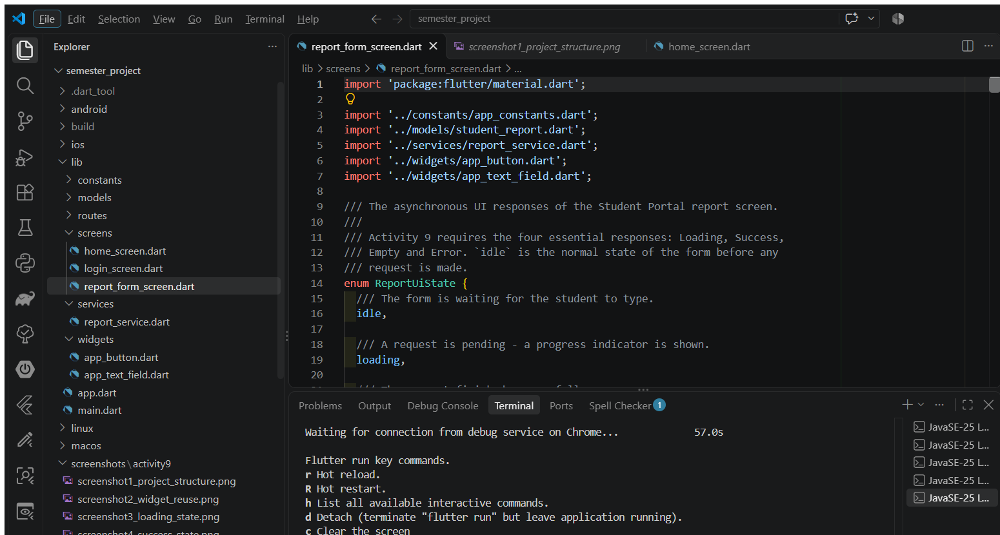
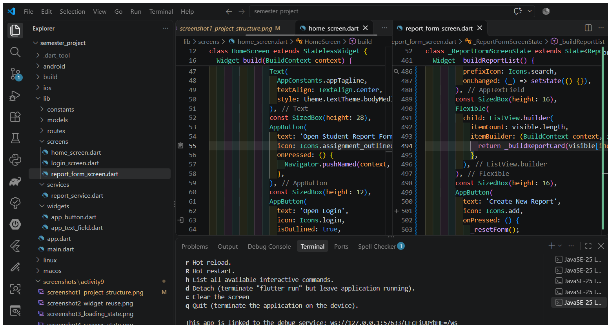
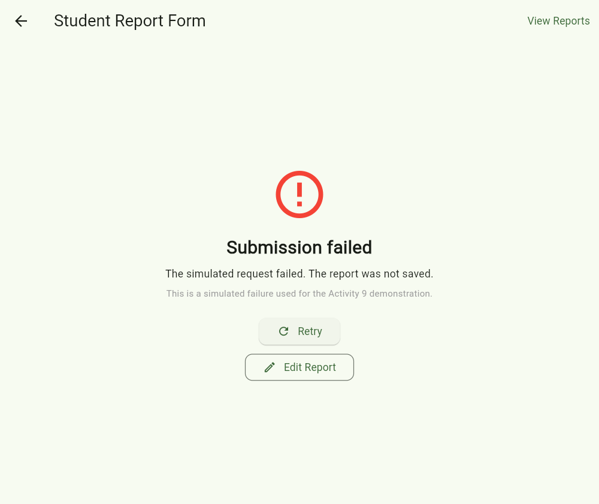
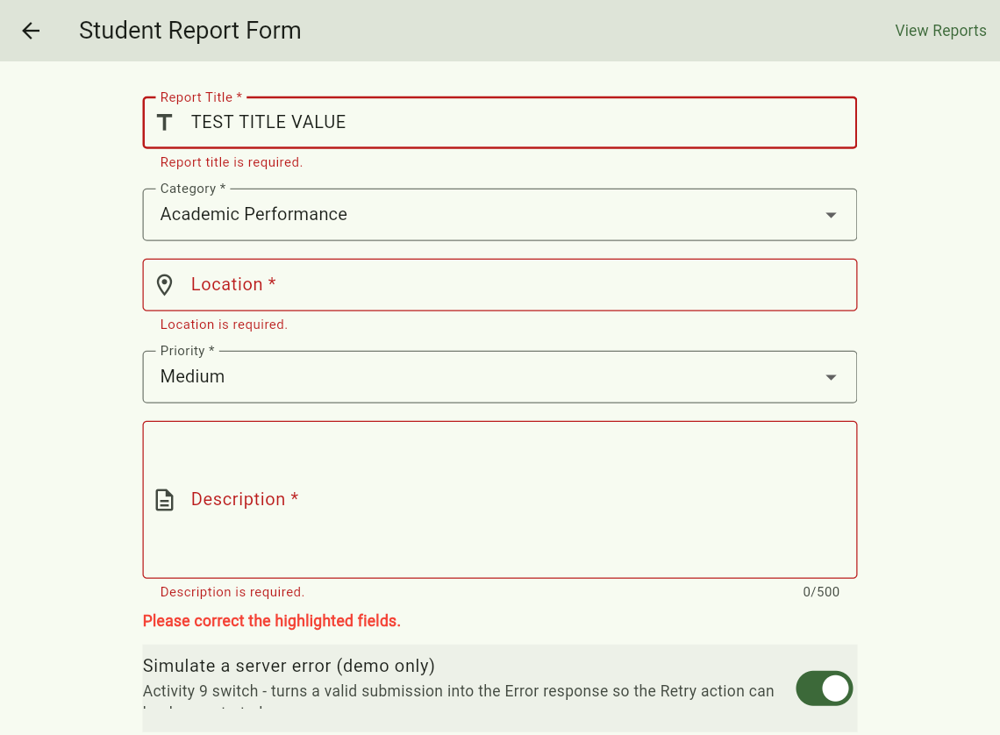

Reusable Screens, Shared Widgets and Asynchronous UI States
Project: Student Portal (continuation of Lab Activity 8)
Activity No. 9 — Primary Output: Activity 8 project extended with
report_form_screen.dart, reusable widgets and six screenshots
Activity 9 extended the existing Student Portal project instead of rebuilding it. The Activity 8
Home and Login screens were kept as they were, and a new /report route was added in
app.dart so the Report Form screen (lib/screens/report_form_screen.dart) opens
from a button on the Home screen and can be left again with the Back button. The new screen is a real
report form for the group’s approved system, with five fields (report title, category, location,
priority and description), field-level validation for every required input, and a simulated submission
whose data is stored in services/report_service.dart and modelled by
models/student_report.dart. It demonstrates the four asynchronous UI responses —
Loading, Success, Empty and Error — with a spinner and a disabled submit button while a request
is pending, a confirmation with the saved report on success, a no-data panel with a first-report action
when nothing exists yet, and a clear failure message with a working Retry. The form reuses the shared
AppButton and AppTextField widgets from lib/widgets/ in more than
one context, so the styling and behaviour stay consistent with the Activity 8 screens, and because
all data access goes through the service layer, the simulated responses can later be replaced by the real
REST API and PostgreSQL database without changing the screens.
https://github.com/renzestopito-del/semester_projectmainf1dccad — Initial Flutter Web project (October 15, 2026)ab1fc44 — Add report form screen with loading, success, empty and error stateshttps://github.com/renzestopito-del/semester_project/commit/ab1fc44ab1fc44 — Add report form screen with loading, success, empty and error states| Test | Observed outcome / evidence |
|---|---|
| Home → Report Form navigation | PASS. The Home screen shows an Open Student Report Form button that calls
Navigator.pushNamed(context, AppRoutes.report); the /report route is
registered in the MaterialApp routes map of lib/app.dart. The Home and
Login screens of Activity 8 are unchanged and still work. (Screenshots 1 and 2) |
| Invalid form produces field-level validation | PASS. The form is wrapped in a Form with a GlobalKey<FormState>.
Every AppTextField has a validator (title required and at least 5 characters, location
required, description required and at least 20 characters, capped at 500). The request is never sent
and each field shows its own message under the input. (Screenshot 7) |
| Valid submit → Loading → Success | PASS. The state changes to ReportUiState.loading before the request starts; the
spinner banner appears and the Submit Report button is disabled for the 3-second simulated
request. When the service answers, the confirmation and the saved report card are shown.
(Screenshots 3 and 4) |
| No available report records → Empty | PASS. Pressing View Reports before any report has been created returns an empty list and shows the No reports available yet. panel with the Create Your First Report and Refresh Reports actions. Filtering the list with a keyword that matches nothing gives the same Empty response. (Screenshot 5) |
| Simulated failure → Error → Retry | PASS. Turning on the Simulate a server error (demo only) switch and submitting a valid
form makes the service throw ReportServiceException; the screen shows the failure
explanation with Retry (repeats the request) and Edit Report (returns to the filled
form). (Screenshot 6) |
| Shared button or field widget used in two contexts | PASS. AppButton (lib/widgets/app_button.dart) is used in
home_screen.dart and in report_form_screen.dart; AppTextField
(lib/widgets/app_text_field.dart) is used for the title, location and description fields
and for the report-list filter. (Screenshot 2) |
| Requirement | Where it is satisfied |
|---|---|
| Continue the same Activity 8 project and repository | Same semester_project folder and same GitHub repository; the Activity 8 files
(home_screen.dart, login_screen.dart, app_button.dart,
app_text_field.dart) are preserved and the Activity 9 work is a second commit
(ab1fc44) on the same main branch. |
New lib/screens/report_form_screen.dart connected to the Home screen |
New file added under lib/screens/; route AppRoutes.report added in
lib/app.dart; the Home screen gained one AppButton that pushes that route. |
| Reuse existing UI components | AppButton and AppTextField from lib/widgets/ are reused in
the new form; no interface code was duplicated. |
| Working form with validation and feedback | Title, Category, Location, Priority and Description fields with field-level validators, a submit action, an inline error banner, and a confirmation panel with next actions. |
| Four asynchronous UI responses | ReportUiState.loading / success / empty / error in
lib/screens/report_form_screen.dart, backed by the simulated
lib/services/report_service.dart. |
| Six authentic screenshots | Screenshots 1 to 6 below (plus the extra validation screenshot 7), captured from the running Flutter Web application in Chrome and the VS Code Explorer of this project. |

semester_project with the Activity 8
files still in place (home_screen.dart, login_screen.dart,
app_button.dart, app_text_field.dart) and the new
lib/screens/report_form_screen.dart added beside them.

AppTextField and AppButton being used inside
report_form_screen.dart, while the right editor shows the same AppButton
from lib/widgets/app_button.dart being used in the existing
home_screen.dart.




Note: all four asynchronous responses were produced by the simulated service
(Future.delayed with an in-memory list). No real database record was created, and the
screen labels every simulated response as such.
report_form_screen.dart extend your Activity 8 project without replacing its existing Home and Login screens?
report_form_screen.dart is a new file added beside the Activity 8 files — nothing in
home_screen.dart or login_screen.dart was replaced or rewritten. The only change
to the old navigation is a new named route, /report, added to the existing routes map in
app.dart, so / still opens HomeScreen and /login still
opens LoginScreen. The Home screen only gained one extra AppButton that calls
Navigator.pushNamed(context, AppRoutes.report), so the report form opens on top of Home and the
Back button returns to the previous screen. Because the new screen uses the same MaterialApp
theme and the same shared widgets, it keeps the Activity 8 look and feel.
The main shared widget we reused is AppButton from lib/widgets/app_button.dart.
It is used in home_screen.dart (Open Student Report Form / Open Login) and again in
report_form_screen.dart (Submit Report, Retry, Edit Report, Submit Another Report, View All
Reports). We also reused AppTextField from lib/widgets/app_text_field.dart for the
title, location and description fields and for the reports filter.
The benefit is one implementation for consistent styling and behavior, less duplicated code, and one place to
fix bugs. AppButton already supports isLoading (spinner inside the button) and a
nullable onPressed (disabled state), so the Loading response needed no new button;
AppTextField already supports validator, onChanged,
maxLines and maxLength, so field-level validation came for free.
Invalid input: the form is wrapped in a Form with a
GlobalKey<FormState>, and every AppTextField has a validator — title
required and at least 5 characters, location required, description required, at least 20 characters and
capped at 500 — while the category and priority dropdowns only accept the fixed values in
AppConstants. On submit, formKey.currentState.validate() runs all validators; if any
fail, the request is never sent and each field shows its own message under the input.
Duplicate submissions: the state is set to ReportUiState.loading before the request starts,
and while loading the Submit Report button receives onPressed: null (disabled) and shows the
loading spinner, and the View Reports action is disabled too. Since the button cannot be pressed again while
the request is in flight, the same report cannot be sent twice.
All four responses are simulated — ReportService uses
Future.delayed(Duration(seconds: 3)) and an in-memory list. There is no REST API or database
yet, and the screen says so (“Simulated response – no real database record was
created.”).
ReportServiceException and the error panel with Retry and
Edit Report is shown.Future.delayed bodies in report_service.dart with real HTTP calls
(POST /api/reports, GET /api/reports) and parse the JSON using the
StudentReport model, keeping the same method names and return types.SocketException into
ReportServiceException so the existing Error state and Retry still work, and keep
200 + [] as the Empty state.reports table
(id, student_id, title, category, location, priority, description, created_at),
server-side validation, and CORS for Flutter Web.